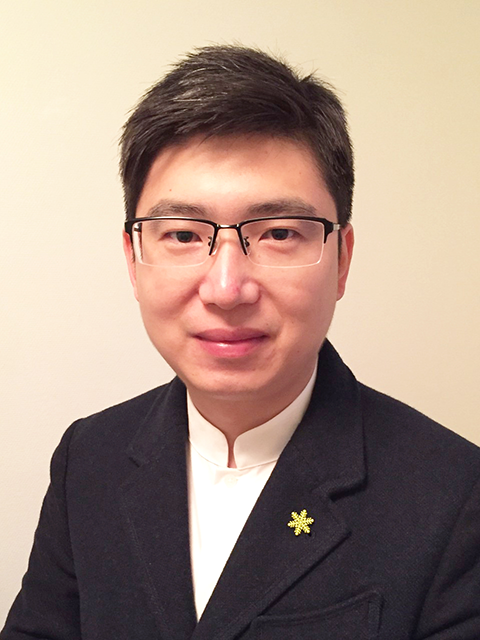

About ANGEOO
ANGEOO Therapeutics is an early-stage scientific and entrepreneurial concept that has not yet been formally established or registered as a company. The idea originated in Umeå, northern Sweden, inspired by advances in angiogenesis and vascular biology research. ANGEOO is exploring opportunities to translate scientific insights into next-generation pro-angiogenic and anti-angiogenic therapeutic strategies. From scientific discovery to therapeutic innovation.

Dr. Tianyan Wang, Photo by Martuza Sarwar
About the Founder
Dr. Tianyan Wang is the founder and driving force behind the ANGEOO Therapeutics concept. He earned a Master's degree in Marine Biology from Tsinghua University and holds a Ph.D. in Cancer Biology from Umeå University.
During his postdoctoral research at Umeå University, Dr. Wang and his colleagues developed a novel angiogenesis model that provided new insights into the biology and mechanisms of blood vessel formation and function. Inspired by these discoveries, he developed the vision for ANGEOO Therapeutics and is exploring opportunities to translate scientific insights into innovative therapeutic strategies.
In addition to his scientific and entrepreneurial interests in biotechnology, Dr. Wang is also the founder and CEO of Andaph AB, a Swedish online fashion company.